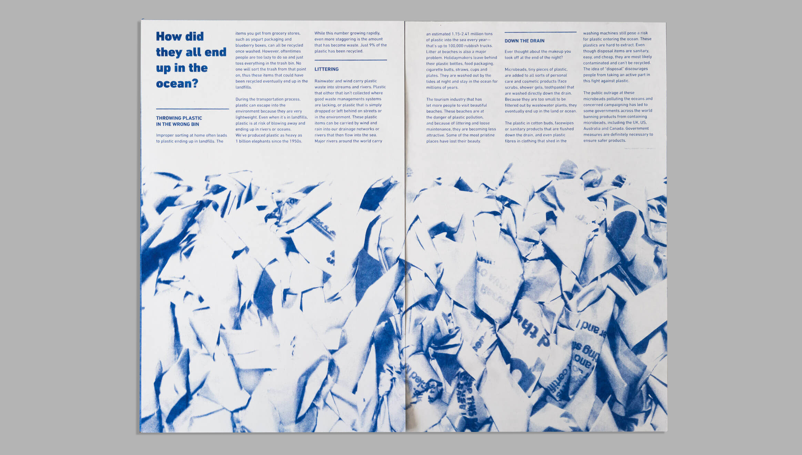
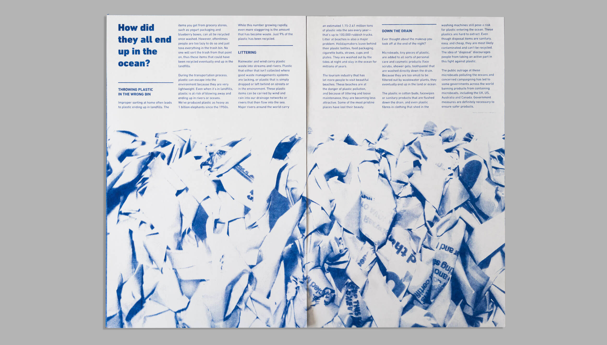
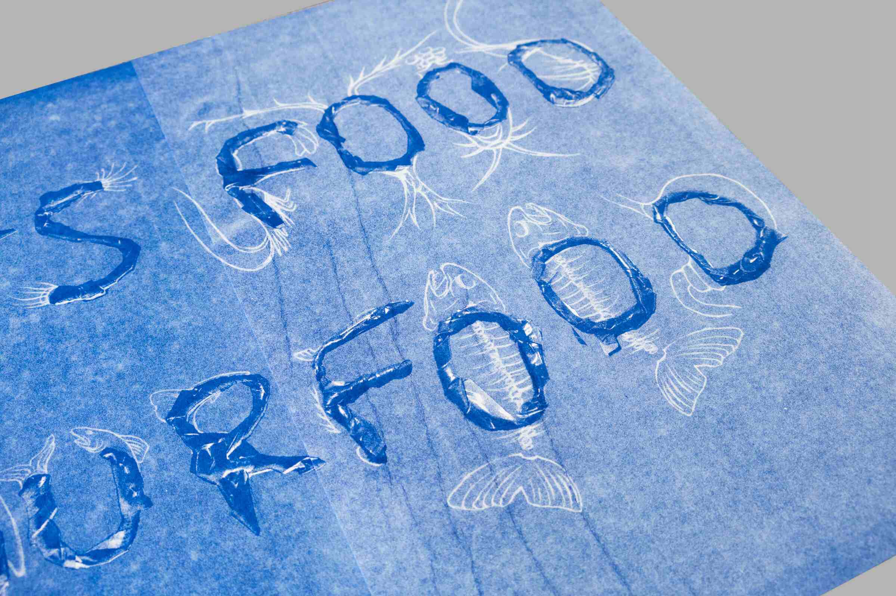
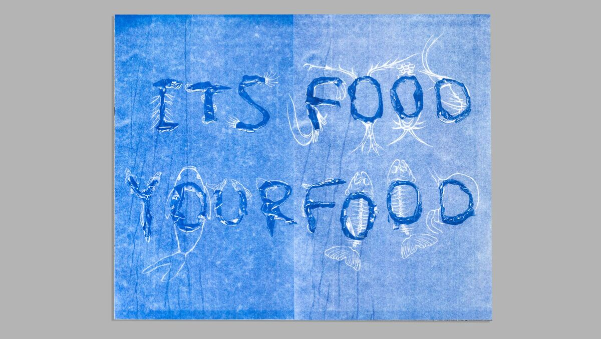
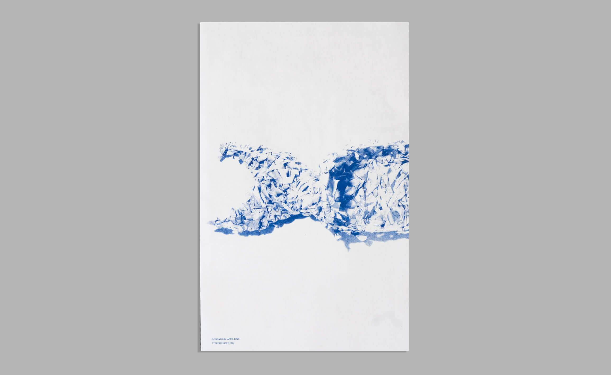
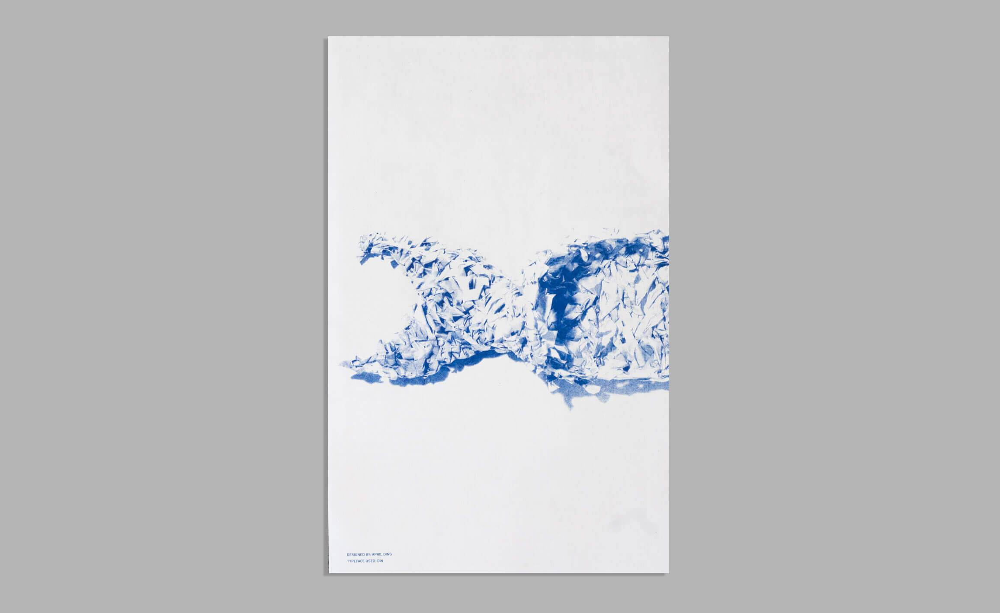

Its Food, Your Food
Infographics / Layout Design / Research / Photography
This RISO print publication discusses the consequences of anthropocene waste, particularly bioaccumulation, from a pile of plastic bags I collected from my everyday life. I created a ‘fish’ sculpture from these plastic bags, photoraphed and used it as a metaphor of human’s impact on marine organisms.

Research
We are forgetful people! Sometimes when we go grocery shopping, we just simply forgot to bring a reusable bag with us. When the cashier asks you, “Paper or plastic?”, you look over that pint of milk and picture it falling through the bag. “Plastic please,” said you guiltily. But you’re going to do that next time again, and eventually you will end up with a cabinet full of wreckled plastic bags hastily stuffed.
I would like to give the reader a more comprehensive view of the bioaccumulation of plastic in the ocean. Everyone knows that plastic is not biodegradable and bad for the environment, but I realized people don’t actually understand the mechanism behind it. Therefore, I decided to break the research into the 8 main categories below: plastic chemical structure, history of plastic, global plastic generation and distribution, current statistics on plastic, how plastic ends up in the ocean, bioaccumulation in marine organisms, health Concerns, The United States plastic production.
Sculpture Making
Wanting to use a material that is ubiquitous and frequently used, I chose Ralph’s plastic bags as my main material. We had a full cabinet of these bags at home from the past two years of grocery shopping.
Focusing on the bioaccumulation in the ocean, I decided to make a fish sculpture. By cutting the plastic bags into long strips, I was able to weave them onto a wire structure. This weaving method creates a fishnet pattern that is mocking humans harvesting animals that eat their trash.
 

Drawing Over the Photograph
Wrapping plastic strips around the wire bases, I made the phrase “ITS FOOD YOUR FOOD”. Then in Photoshop, I drew different marine organisms on the top in the order of bioaccumulation stages: from small algae to shrimp, then to bigger fish like tuna, then to a human stomach.
 Creating Infographics
I also created a number of infographics to accompy my main writing.
 
